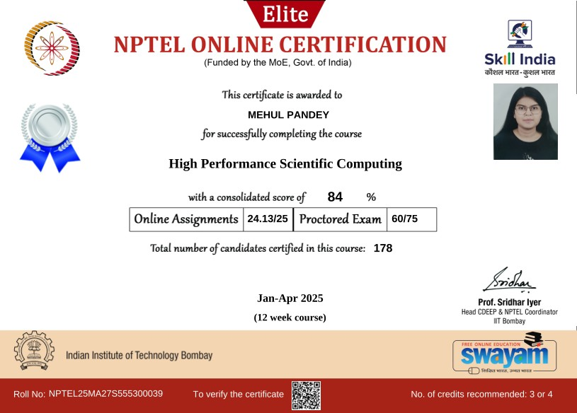
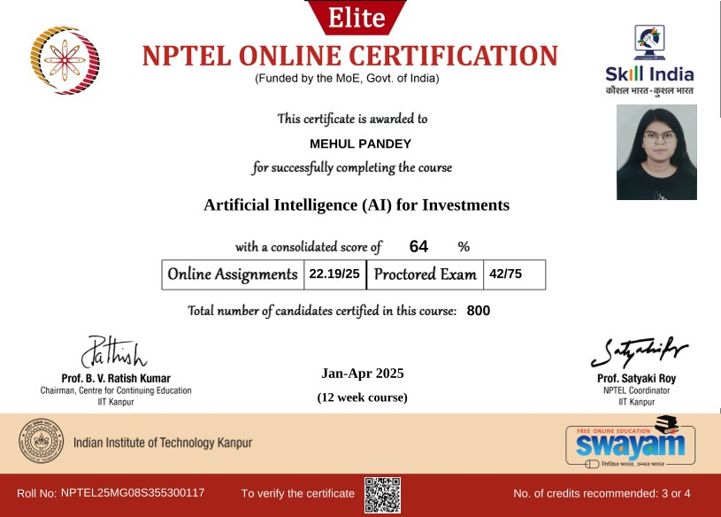
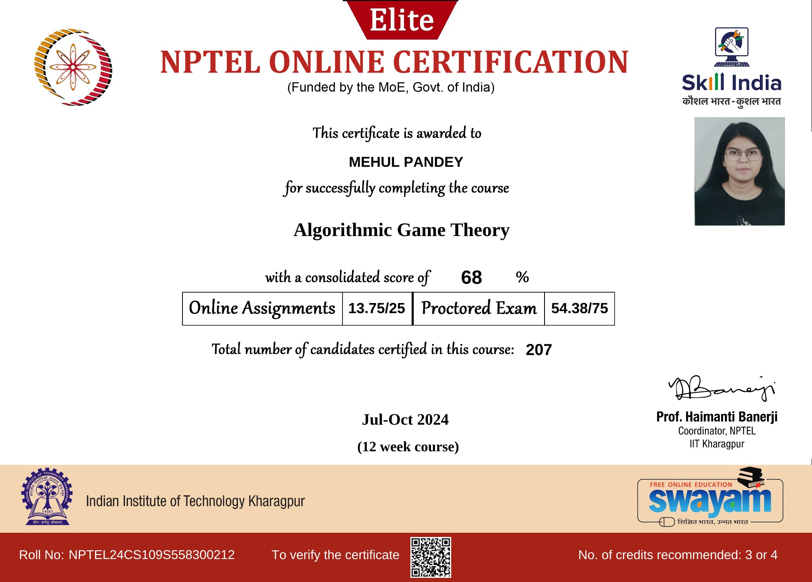
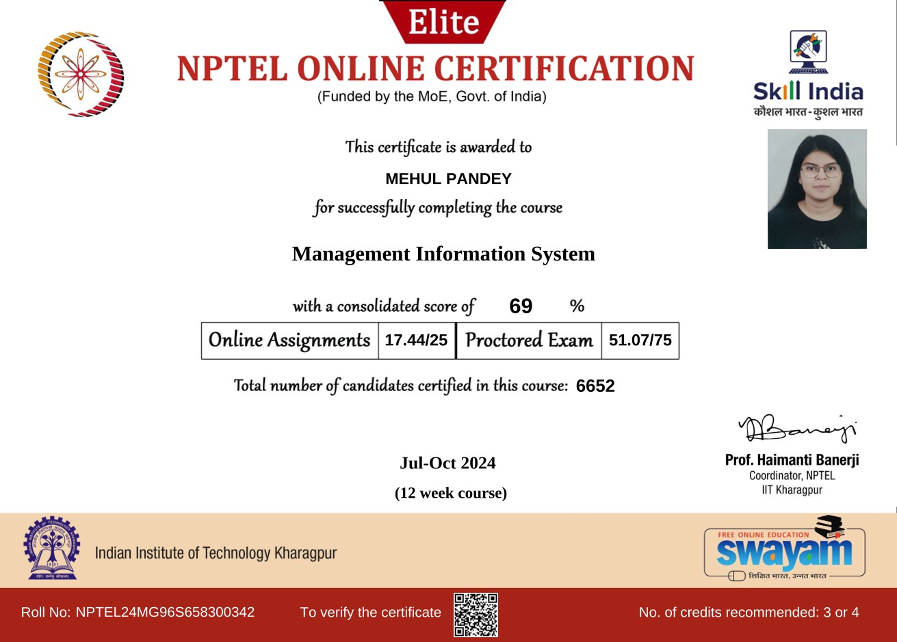
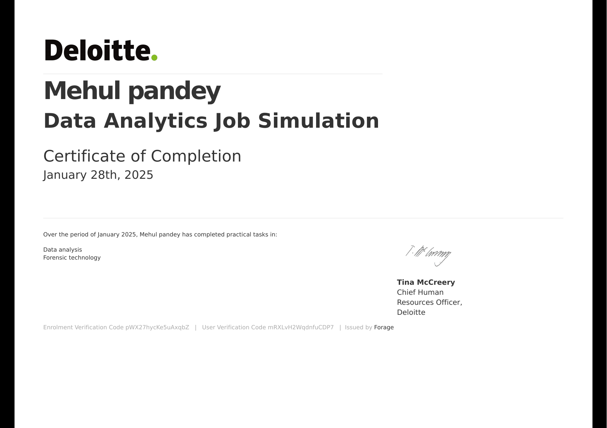
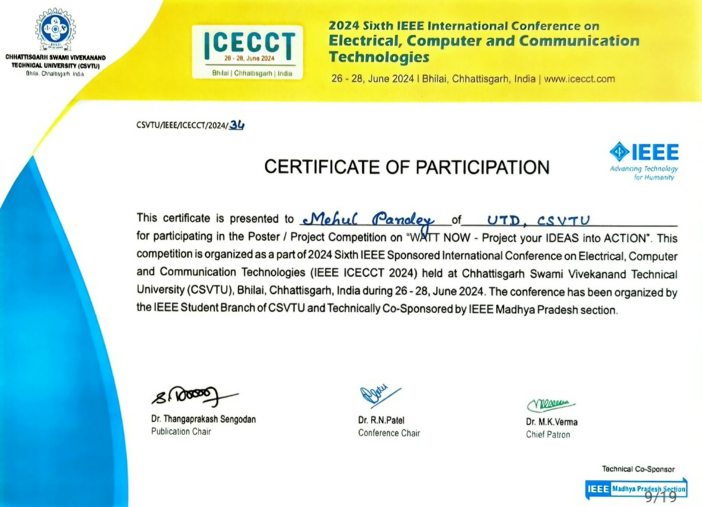
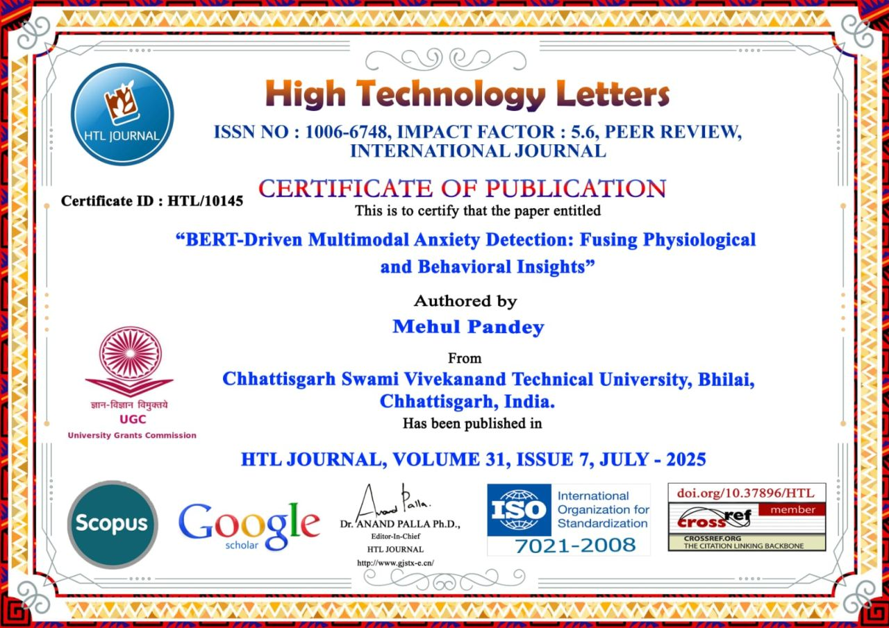
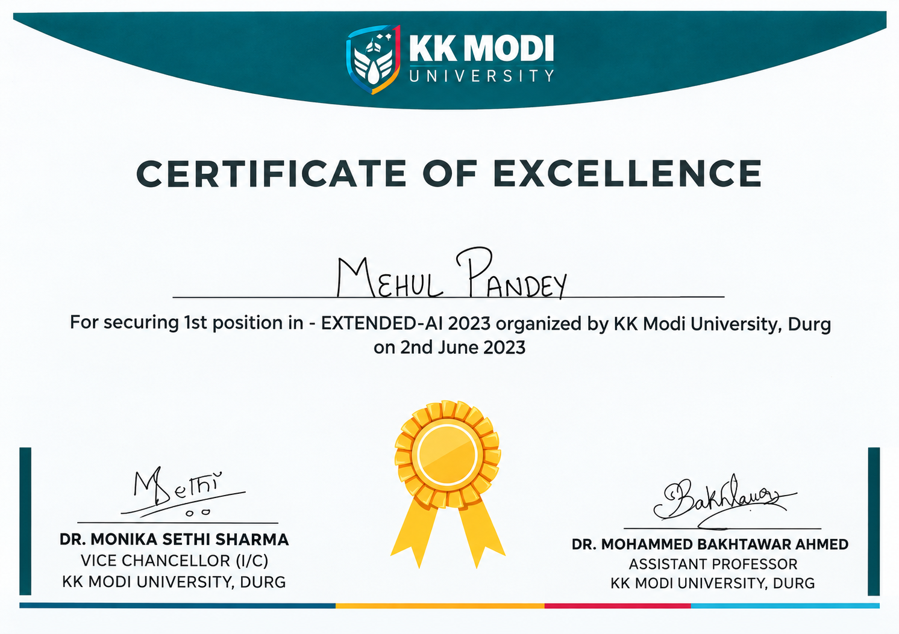

BERT-Driven Multimodal Anxiety Detection: Fusing Physiological and Behavioral Insights
Multimodal anxiety detection combining ECG-derived physiological features and speech-based behavioral features.
06 / RESEARCH & RECOGNITION
Selected papers with direct references, followed by certificate previews you can open at full size.
Multimodal anxiety detection combining ECG-derived physiological features and speech-based behavioral features.
Research on ECG and heart-rate variability responses during a calming virtual-reality experience.
TechRxiv identifies its entries as preprints. The certificate for IEEE ICECCT participation is listed separately below; it is not presented as a publication certificate.







Chhattisgarh Swami Vivekanand Technical University (CSVTU), Bhilai
Secured first position among 100+ participating teams in the Extended-AI 2023 competition.
